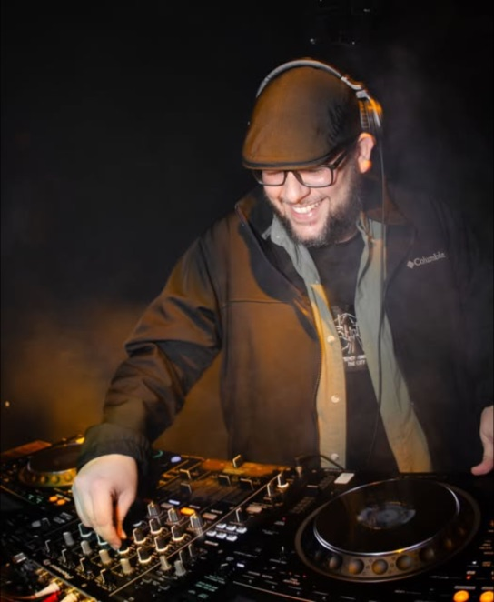
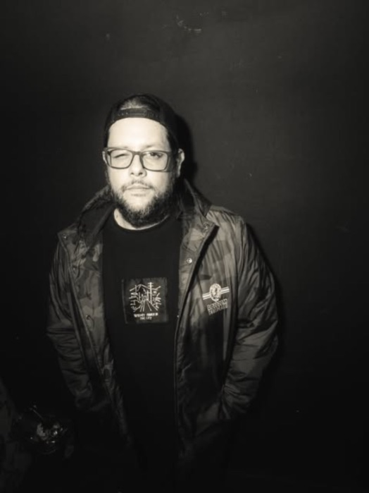
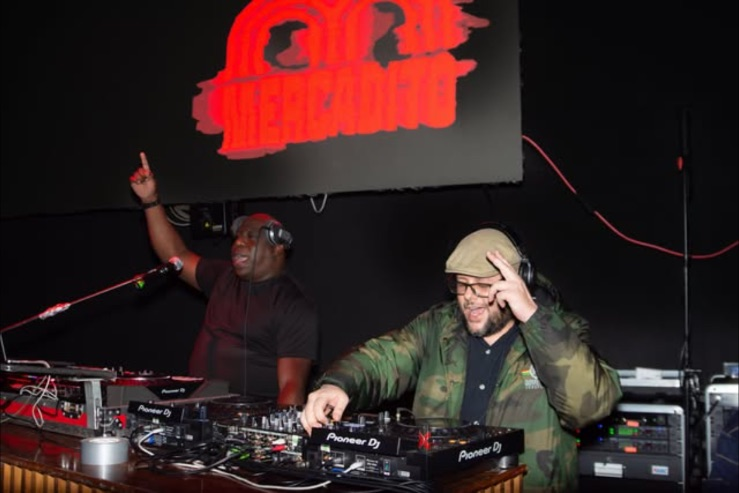
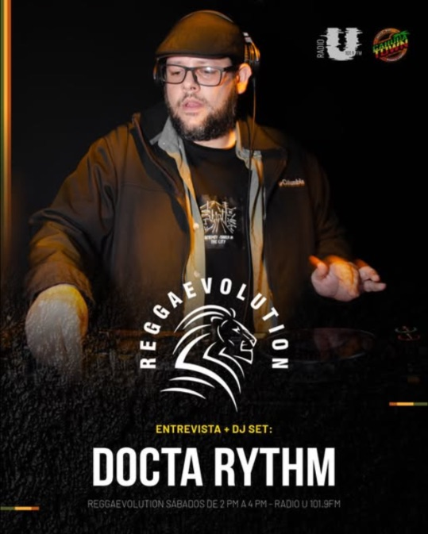
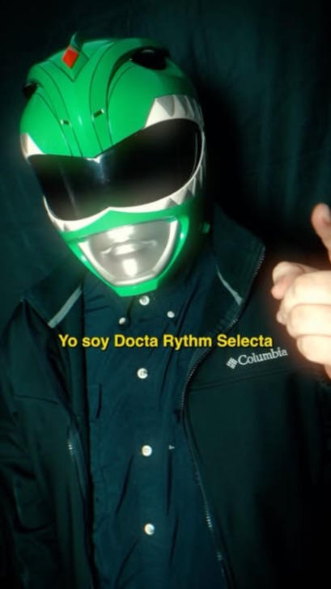
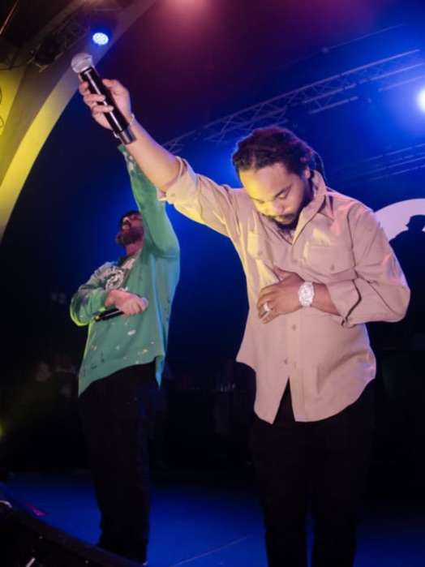

KIT DE PRENSA · 2026Reggae · Dancehall · Dub · Ska — San José, Costa Rica
Selecta, productor y radio host. Desde 2005 llevando la cultura sound system a clubes y festivales.
Biografía
Docta Rythm Selecta es una de las voces del sound system costarricense. Desde 2005 mueve pistas con reggae roots, dancehall, dub, rocksteady y ska, con selección fina, vinilo en el alma y micrófono encendido.
Es fundador de Call Di Docta Records, sello desde el que ha lanzado riddims como Call Di Docta Riddim, Curandero Riddim y Politricks Riddim, y de la fiesta Dancehall Madness CR. Es parte de The Aces Sounds y tiene un alter ego ska: El Doctor Ska.
Ha compartido escenario y cartel con Sizzla, Gentleman, T.O.K., Mr. Vegas, Capleton, Charly Black, Non Palidece y Laguna Pai. En 2025 llevó su set al Rototom Sunsplash (España), uno de los festivales de reggae más grandes del mundo.
Su T.O.K. Promo Mixtape superó los 174.000 plays en SoundCloud.
Docta Rythm Selecta, "El Doctor del Ritmo", es selecta, productor y radio host de San José, Costa Rica. Desde 2005 mueve pistas con reggae roots, dancehall, dub, rocksteady y ska. Fundador de Call Di Docta Records y Dancehall Madness CR, parte de The Aces Sounds y con presencia en el Rototom Sunsplash 2025.


Shows · Rider · Contacto
* Confirmar requerimientos finales al cerrar la fecha.
SoundCloud: soundcloud.com/doctarythmselecta
YouTube: youtube.com/@CallDiDoctaMovement
Spotify: Docta Rythm (Call Di Docta Records)
Email: calldidocta@gmail.com
Instagram: @doctarythmselecta
Facebook: /DoctaRythmSelecta
Base: San José, Costa Rica
Disponible para todo Costa Rica, Centroamérica y giras internacionales.


